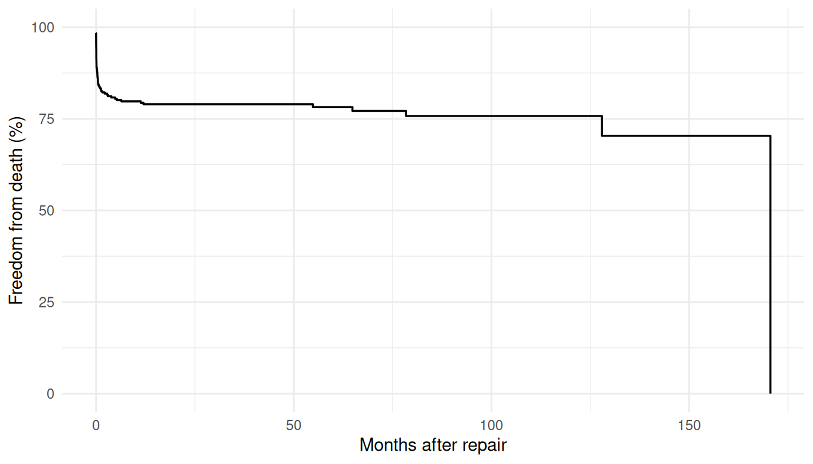
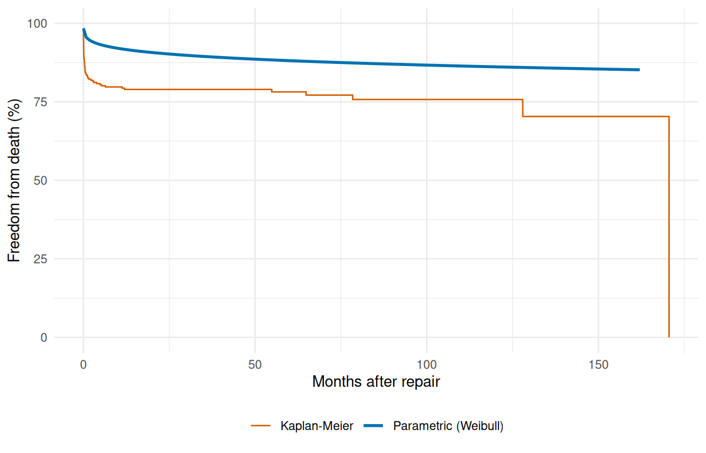
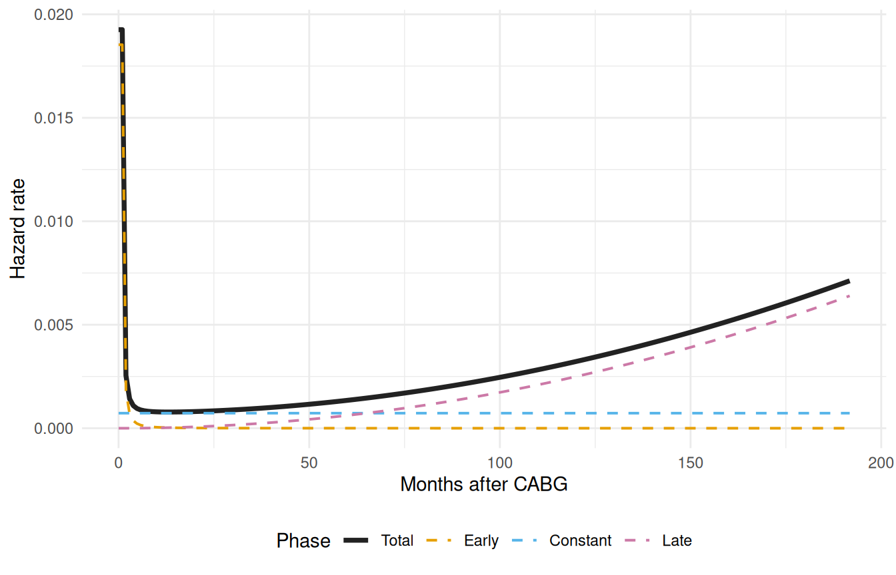
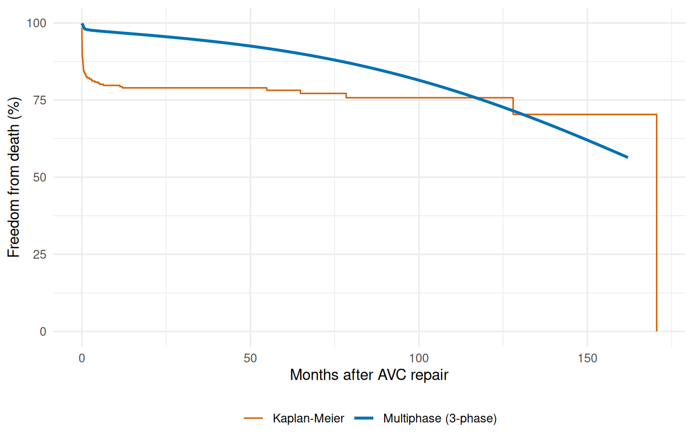
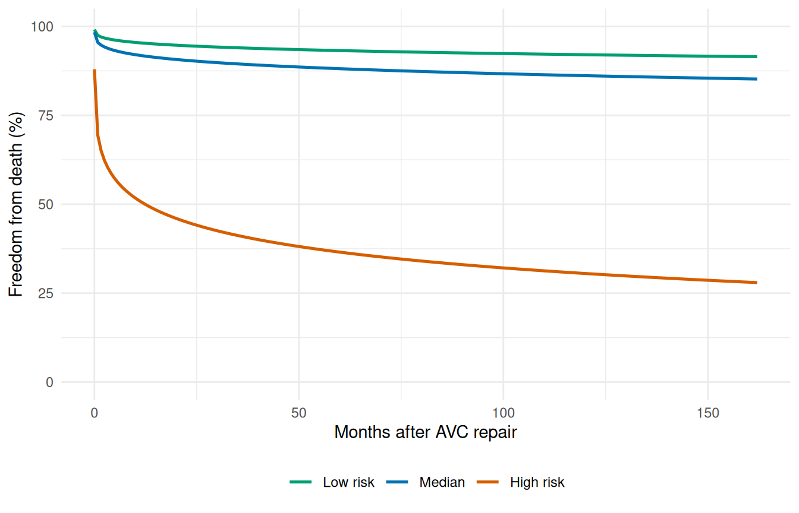
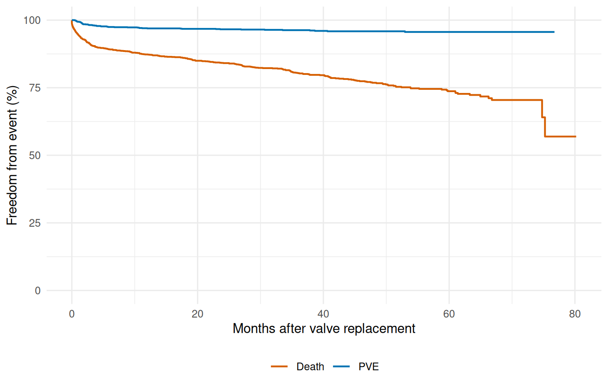

Prediction & Visualization
Survival curves, phase decomposition, and risk profiles
Source:vignettes/prediction-visualization.qmd
This vignette covers prediction from fitted hazard models: generating survival curves, decomposing the multiphase hazard, comparing risk profiles, and overlaying parametric fits with Kaplan-Meier estimates.
1 Kaplan-Meier baseline
Before any parametric modeling, the Kaplan-Meier curve establishes a nonparametric reference. All subsequent parametric predictions should be compared against this baseline to assess goodness-of-fit.
km_df <- data.frame(time = km$time, survival = km$surv * 100)
ggplot(km_df, aes(time, survival)) +
geom_step(linewidth = 0.6) +
scale_y_continuous(limits = c(0, 100)) +
labs(x = "Months after repair", y = "Freedom from death (%)") +
theme_minimal()
2 Prediction types
The predict() method supports several output types. For a multivariable Weibull model on the AVC data:
Generate predictions at a median-risk profile over a time grid:
t_grid <- seq(0.01, max(avc$int_dead) * 0.95, length.out = 200)
profile <- data.frame(
time = t_grid,
age = median(avc$age),
status = 2,
mal = 0,
com_iv = 0
)
surv <- predict(fit, newdata = profile, type = "survival")
cumhaz <- predict(fit, newdata = profile, type = "cumulative_hazard")
profile$survival <- surv
profile$cumulative_hazard <- cumhaz
head(profile[, c("time", "survival", "cumulative_hazard")])
#> time survival cumulative_hazard
#> 1 0.0100000 0.9840245 0.01610446
#> 2 0.8242888 0.9552402 0.04579243
#> 3 1.6385776 0.9475408 0.05388532
#> 4 2.4528664 0.9424348 0.05928850
#> 5 3.2671552 0.9385173 0.06345398
#> 6 4.0814440 0.9352997 0.066888313 Parametric survival with KM overlay
The fundamental diagnostic: does the parametric model track the Kaplan-Meier?
ggplot() +
geom_step(data = km_df, aes(time, survival, colour = "Kaplan-Meier"),
linewidth = 0.5) +
geom_line(data = profile,
aes(time, survival * 100, colour = "Parametric (Weibull)"),
linewidth = 1) +
scale_colour_manual(
values = c("Parametric (Weibull)" = "#0072B2",
"Kaplan-Meier" = "#D55E00")
) +
scale_y_continuous(limits = c(0, 100)) +
labs(x = "Months after repair", y = "Freedom from death (%)",
colour = NULL) +
theme_minimal() +
theme(legend.position = "bottom")
4 Decomposed multiphase hazard
The multiphase model decomposes the cumulative hazard into per-phase contributions. Using decompose = TRUE with type = "cumulative_hazard" returns a data frame with columns for each phase.
data(cabgkul)
fit_mp <- hazard(
Surv(int_dead, dead) ~ 1,
data = cabgkul,
dist = "multiphase",
phases = list(
early = hzr_phase("cdf", t_half = 0.2, nu = 1, m = 1,
fixed = "shapes"),
constant = hzr_phase("constant"),
late = hzr_phase("g3", tau = 1, gamma = 3, alpha = 1, eta = 1,
fixed = "shapes")
),
fit = TRUE,
control = list(n_starts = 5, maxit = 1000)
)
t_mp <- seq(0.01, max(cabgkul$int_dead) * 0.95, length.out = 200)
nd <- data.frame(time = t_mp)
decomp <- predict(fit_mp, newdata = nd, type = "cumulative_hazard",
decompose = TRUE)
# Numerical differentiation: h(t) ≈ ΔH(t) / Δt
num_hazard <- function(cumhaz, time) {
dt <- diff(time)
dH <- diff(cumhaz)
c(dH[1] / dt[1], dH / dt)
}
h_long <- rbind(
data.frame(time = t_mp, hazard = num_hazard(decomp$early, t_mp),
Phase = "Early"),
data.frame(time = t_mp, hazard = num_hazard(decomp$constant, t_mp),
Phase = "Constant"),
data.frame(time = t_mp, hazard = num_hazard(decomp$late, t_mp),
Phase = "Late"),
data.frame(time = t_mp, hazard = num_hazard(decomp$total, t_mp),
Phase = "Total")
)
h_long$Phase <- factor(h_long$Phase,
levels = c("Total", "Early", "Constant", "Late"))
ggplot(h_long, aes(time, hazard, colour = Phase, linetype = Phase)) +
geom_line(aes(linewidth = Phase)) +
scale_colour_manual(values = c(Total = "#222222", Early = "#E69F00",
Constant = "#56B4E9", Late = "#CC79A7")) +
scale_linetype_manual(values = c(Total = "solid", Early = "dashed",
Constant = "dashed", Late = "dashed")) +
scale_linewidth_manual(values = c(Total = 1.3, Early = 0.7,
Constant = 0.7, Late = 0.7)) +
labs(x = "Months after CABG", y = "Hazard rate",
colour = "Phase", linetype = "Phase", linewidth = "Phase") +
theme_minimal() +
theme(legend.position = "bottom")
The early phase captures the steep post-operative risk that peaks within the first year. The constant phase represents ongoing background mortality. The late phase captures the gradually increasing risk of late attrition.
5 Multiphase survival with KM overlay
surv_mp <- predict(fit_mp, newdata = nd, type = "survival") * 100
ggplot() +
geom_step(data = km_df, aes(time, survival, colour = "Kaplan-Meier"),
linewidth = 0.5) +
geom_line(data = data.frame(time = t_grid, survival = surv_mp),
aes(time, survival, colour = "Multiphase (3-phase)"),
linewidth = 1) +
scale_colour_manual(
values = c("Multiphase (3-phase)" = "#0072B2",
"Kaplan-Meier" = "#D55E00")
) +
scale_y_continuous(limits = c(0, 100)) +
labs(x = "Months after AVC repair", y = "Freedom from death (%)",
colour = NULL) +
theme_minimal() +
theme(legend.position = "bottom")
6 Patient-specific risk profiles
The multivariable model generates patient-specific survival curves by varying the covariate profile:
profiles <- list(
"Low risk" = data.frame(age = quantile(avc$age, 0.25),
status = 1, mal = 0, com_iv = 0),
"Median" = data.frame(age = median(avc$age),
status = 2, mal = 0, com_iv = 0),
"High risk" = data.frame(age = quantile(avc$age, 0.90),
status = 4, mal = 1, com_iv = 1)
)
curves <- do.call(rbind, lapply(names(profiles), function(nm) {
nd <- profiles[[nm]][rep(1, length(t_grid)), ]
nd$time <- t_grid
data.frame(time = t_grid,
survival = predict(fit, newdata = nd, type = "survival") * 100,
Profile = nm)
}))
curves$Profile <- factor(curves$Profile,
levels = c("Low risk", "Median", "High risk"))
ggplot(curves, aes(time, survival, colour = Profile)) +
geom_line(linewidth = 0.9) +
scale_colour_manual(values = c("Low risk" = "#009E73",
"Median" = "#0072B2",
"High risk" = "#D55E00")) +
scale_y_continuous(limits = c(0, 100)) +
labs(x = "Months after AVC repair", y = "Freedom from death (%)",
colour = NULL) +
theme_minimal() +
theme(legend.position = "bottom")
The separation between curves quantifies the prognostic discrimination of the model. A wider spread indicates stronger covariate effects.
7 Multi-endpoint visualization: valves
The valves dataset has multiple endpoints that can be visualized together:
data(valves)
valves <- na.omit(valves)
km_death <- survfit(Surv(int_dead, dead) ~ 1, data = valves)
km_pve <- survfit(Surv(int_pve, pve) ~ 1, data = valves)
ep_df <- rbind(
data.frame(time = km_death$time, survival = km_death$surv * 100,
Endpoint = "Death"),
data.frame(time = km_pve$time, survival = km_pve$surv * 100,
Endpoint = "PVE")
)
ggplot(ep_df, aes(time, survival, colour = Endpoint)) +
geom_step(linewidth = 0.7) +
scale_y_continuous(limits = c(0, 100)) +
scale_colour_manual(values = c("Death" = "#D55E00", "PVE" = "#0072B2")) +
labs(x = "Months after valve replacement",
y = "Freedom from event (%)", colour = NULL) +
theme_minimal() +
theme(legend.position = "bottom")